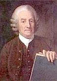

|
The Trigger of Psychic Vision |
|
Emanuel Swedenborg's near-death experiences |
|
 |
Swedenborg and the Near-Death Experience
Swedenborg, who lived from 1688 until 1772, was born in Stockholm. He was quite renowned in his day and made respectable contributions in various fields of natural science. His writings, at first oriented towards anatomy, physiology, and psychology, gained quite a bit of recognition. Later in his life, however, he underwent a religious crisis and began to tell of experiences in which he had purportedly been in communication with spiritual entities from beyond.
His later works abound with vivid descriptions of what life after death is like. Again, the correlation between what he writes of some of his spiritual experiences and what those who have come back from close calls with death report is amazing.
 For instance, Swedenborg describes how, when the bodily functions of respiration
and circulation cease:
For instance, Swedenborg describes how, when the bodily functions of respiration
and circulation cease:
|
"Still man does not die, but is only separated from the corporeal part which was of use to him in the world ... Man, when he dies, only passes from one world into another." |
 He claims that he himself has been through the early events of death, and has
had experiences out of his body.
He claims that he himself has been through the early events of death, and has
had experiences out of his body.
|
"I was brought into a state of insensibility as to the bodily sense, thus almost into the state of the dying; yet the interior life with thought remaining entire, so that I perceived and retained in memory the things which occurred, and which occur to those who are resuscitated from the dead ... Especially it was given to perceive ... that there was a drawing and ... pulling of ... mind, thus of my spirit, from the body." |
 During this experience, he encounters beings whom he identifies as angels. They
ask him, in effect, if he is prepared to die.
During this experience, he encounters beings whom he identifies as angels. They
ask him, in effect, if he is prepared to die.
|
"Those angels first inquired what my thought was, whether it was like the thought of those who die, which is usually about eternal life; and that they wished to keep my mind in that thought." |
 Yet, the communication which takes place between Swedenborg and the spirits is
not of an earth, human kind. It is instead almost a direct transfer of thoughts.
Hence, there is no possibility of misunderstanding.
Yet, the communication which takes place between Swedenborg and the spirits is
not of an earth, human kind. It is instead almost a direct transfer of thoughts.
Hence, there is no possibility of misunderstanding.
|
"Whereas spirits converse with each other by universal language ... Every man, immediately after death, comes into this universal language ... which is proper to his spirit ... |
|
"The speech of an angel or a spirit with man is heard as sonorously as the speech of a man with a man; yet it is not heard by others who stand near, but by himself alone; the reason is, because the speech of an angel or spirit flows first into the man's thought ..." |
 The newly dead person does not realize that he is dead, for he is still in a
body which resembles his physical body in several respects.
The newly dead person does not realize that he is dead, for he is still in a
body which resembles his physical body in several respects.
|
"The first state of man after death is similar to his state in the world, because then in like manner he is in externals ... Hence, he knows no otherwise than the he is still in the world ... Therefore, after they have wondered that they are in a body, and in every sense which they had in the world ... they come into a desire of knowing what heaven is, and what hell is." |
 Yet, the spiritual state is less limited. Perception, thought, and memory are
more perfect, and time and space no longer pose the obstacles they do in
physical life.
Yet, the spiritual state is less limited. Perception, thought, and memory are
more perfect, and time and space no longer pose the obstacles they do in
physical life.
|
"All the faculties of spirits ... are in a more perfect state, as well their sensations as their thoughts and perceptions." |
 The dying man may meet with other departed spirits whom he knew while in life.
They are there to help him during his passage into the beyond.
The dying man may meet with other departed spirits whom he knew while in life.
They are there to help him during his passage into the beyond.
|
"The spirit of man recently departed from the world is ... recognized by his friends, and by those whom he had known in the world ... wherefore they are instructed by their friends concerning the state of eternal life ..." |
 His past life may be shown to him in a vision. He remembers every detail of it,
and there is no possibility of his lying or concealing anything.
His past life may be shown to him in a vision. He remembers every detail of it,
and there is no possibility of his lying or concealing anything.
|
"The interior memory ... is such that there are inscribed in it all the particular things ... which man has at any time thought, spoken, and done ... from his earliest infancy to extreme old age. Man has with him the memory of all these things when he comes into another life, and is successively brought into all recollection of them ... All that he had spoken and done ... are made manifest before the angels, in a light as clear as day ... and ... there is nothing so concealed in the world that it is nothing so concealed in the world that it is not manifested after death ... as if seen in effigy, when the spirit is viewed in the light of heaven." |
Swedenborg also describes the "light of the Lord" which permeates the hereafter. It is a light of ineffable brightness which he claims to have glimpsed himself. It is a light of truth and of understanding.
Dr. Moody concludes at this point that the writings of Swedenborg provide striking parallels to the events of contemporary near-death experiences.
Insights From Swedenborg's NDEs
During several of Swedenborg's near-death experiences, he would witness people dying and see their happenings in the afterlife. He stated that immediately following death, there is a period of self-discovery in which the social masks worn on earth dissolve away and the true self is revealed. Each person then shapes their own eternity to correspond with their real inner nature. Some people become irrational, driven by fear and greed. Such people are in the spiritual condition which Swedenborg called hell. Hell is a psychological condition which corresponds to the suffering we experience on earth when we allow ourselves to be driven by the blind greed of our own egos. There are no devils in hell to inflict punishments because in the hellish spiritual state each person acts out their own malice by tormenting others.
After death, most people find within themselves the psychological state Swedenborg called heaven. It is a joyous condition and a state of expanded awareness, of perceiving more and more of the grand plan of creation. The heaven which Swedenborg experienced, corresponds to deeds, not creeds. Therefore, persons from many cultures and religions form the societies of heaven. Swedenborg often mentioned that these societies, the Church of the Lord, are universal. This Church of the Lord consists of all those who have lived in the goodness of love according to their own spiritual life on earth. A graphical representation of the heavens and hells Swedenborg experienced can be seen at the web link provided.
Swedenborg's journeys into the afterlife provides more than just a glimpse into the exciting journey awaiting us all, it gives a very clear picture. The following is just an excerpt.
A Person's True Desire Is Revealed at Death
There is a "strongest desire [love]" which a person keeps after death, and which never changes throughout eternity. Everyone has a considerable number of desires, but they all go back to a strongest desire and make one with it - or, taken all together, compose it.
All the elements of intention that are in harmony with the strongest desire are called desires, because they are desired. Some of these desires are more inward, some more outward; there are some directly bound; some are nearer, some are farther away; there are various kinds of subordination.
Taken all together, they make up a kind of kingdom. Thus they are in fact organized within a person, even though people are completely unaware of their organization. To some extent, however, this is made known to people in the other life where they have an outreach of thought and affection that depends on this organization. This is an outreach into the heavenly communities if the strongest desire is made up of desires of heaven, but an outreach into hellish communities if the strongest desire is made up of desires of hell.
(1) After death, people are their desire or impulses.
(2) Throughout eternity, people stay the way they are insofar as their impulses or strongest desire is concerned.
(3) People who have a heavenly and spiritual desire enter heaven; while people who have a physical and worldly desire without a heavenly and spiritual desire enter hell.
(4) People do not keep their faith if it does not come from a heavenly desire.
(5) Desire in act is what lasts; hence this is the person's life.
After death, a person is his desire or intention (impulses).
This has been made clear to me by observed experiences over and over again. The whole of heaven is divided into communities on the basis of differences in the good that comes from desire. Every single spirit who is raised into heaven and becomes an angel is taken to the community where his or her desire is, and once there they are where they belong, so to speak - as though they were at home, where they were born. An angel senses this, and makes close friends with others like themselves.
When they leave and go to another community, there is a certain constant resistance. This is the effect of their longing to return to those who are like themselves, which means to their own strongest desire. This is how close friendships are formed in heaven. The same holds true in hell, where people also form friendships on the basis of desires which are opposed to heavenly ones.
We may establish that, after death, people are their desire from the fact also that there is a removal after death, a kind of carrying away of the elements which are not consistent with their strongest desire. If people are good, then all the things that are discordant, or that disagree with their true desire, are removed and, so to speak, are carried away. In this way they are installed in their own desire. The same happens with people who are evil (the difference being that true things are carried away from them, while false things are carried away from good persons), until finally all individuals become their own true inner desire. This takes place when a spirit-person is brought through into the third state described below. Once this has happened, people constantly turn their face toward their inner desire, keeping it always before their eyes wherever they turn.
The same holds true for people in this world: their own desire leads them, too, and they are led by others by means of their own desire. It is all the more true when they become spirits, because then they are not allowed to present the semblance of any other desire, or to pretend a desire that is not really theirs.
All personal associations in the other life evidences the fact that people's spirits reflect their strongest desire: in fact, whenever anyone acts and talks in keeping with someone else's desire, that person seems complete, with a fully expressive, cheerful, lively face. But whenever anyone acts and talks contrary to someone else's desire, that person's face begins to change, to become hazy, and to fade from view. Eventually the whole person vanishes as though they had never been there. I have often been amazed that this is so, since nothing like it occurs in our world; but I have been told that something like this does happen to the spirit of a person, which is no longer within another person's view when it turns away from that other.
Several times I have been enabled to see how good, simple folk wanted to educate evil people in matters of truth and goodness, and how such people ran away from this education; and when they reached their own kind, they grasped the false elements that suited their desire with an intense pleasure. I have also been enabled to see good spirits talking with each other about true things, which the good people present listened to eagerly, while the evil ones who were also present paid no attention whatever, just as though they did not hear anything.
Paths are visible in the spiritual world. Some lead to heaven, some to hell; one to one community, one to another. Good spirits travel only along paths that lead to heaven, to the community which is involved in the particular good that comes from their own desire. They do not see paths leading in other directions. Evil spirits follow only paths that lead to hell, to the particular community there which is involved in the evil that comes from their own desire. They do not see paths leading in other directions; and even if they do, they do not want to follow them.
Then, after the first and second states have been completed, these two classes are separated so that they no longer see or recognize each other. Everyone becomes their own desire, not only in regard to the more inward elements of their mind, but also in regard to the more outward matters that are proper to their face, body, and speech; for all people become an image of their desire, even in outward things.
People who are involved in a physical desire are wholly incapable of living in heaven's warmth, since heaven's warmth is heavenly desire. They are however capable of living in hell's warmth, which is a desire of cruelty toward other people who do not support them. The pleasures of this desire are various kinds of contempt for others, of enmity, hatred, and revenge. When they are involved in these, they are involved in their own life, utterly ignorant of what it means to do something good to others on the basis of and for the sake of the good act itself - only of acting on the basis of what is evil and for the sake of what is evil.
People who are involved in a physical desire cannot breathe in heaven. If an evil person is taken there, he draws each breath like someone hard pressed in a struggle. But people who are involved in a heavenly desire breathe more freely and live more fully the farther into heaven they are.
The First Stage After Death
There are three states people pass through after their death before arriving in heaven or hell. The first state involves their more outward aspects, the second involves their more inward aspects, and the third is a state of preparation. People pass through these states in the world of spirits.
Insofar as the first state is concerned, the state involving people's more outward aspects, they come into this state immediately after death.
All people have more inward and outward aspects to their spirit. A person's more outward aspects are the means by which it adjusts to the person's body in the physical world (especially his face, speech, and manner) for associating with other people. But the spirit's more inward aspects are the ones which belong to the person's intention and resultant thought, which are seldom evident in the face, speech, or manner. From infancy, people get used to displaying friendliness, kindness and sincerity, and hiding their real thoughts and feelings. So as a matter of habit they reflect a moral and civic life outwardly, no matter what they are like inwardly.
This habit is the source of people's virtual ignorance of what lies deeper within them, and also of their inattention to these matters.
Everyone's first state after death is very much like their state in the physical world, since at that point they are similarly involved in outward matters. They have much the same face, speech, and spirit, consequently they have much the same moral and civic life.
This is why they are then quite unaware that they are not still in the physical world, unless they pay attention to things that happen to them and to what they were told by angels when they were awakened - namely, that they are now spirits.
So the one life continues into the other, and death is only a crossing over.
Whenever individuals in the spirit world think about someone else in the spirit world, they set the person's face before themselves in their thought, together with many other things that characterized the person's life. When they do that, the other person becomes present as though he had been called and summoned.
This kind of thing happens in the spiritual world because thoughts are communicated there and because distances do not have the same attributes as they have in the natural world. This is why everyone, upon first arriving in the spirit world, is recognized by friends, relatives, and acquaintances of one sort or another, and this is also why they communicate with each other and then associate with each other along the lines of their friendships in the physical world.
So they are taught by their friends about the state of eternal life, and are taken around to different places, into different communities. Some are taken to cities, some to gardens and parks; but most are taken to splendid places because this sort of place delights the outward nature they are still involved in. Then they are intermittently led into thoughts they had during their physical life about the soul's state after death, heaven, and hell, until they also come to resent their former utter ignorance of things like this, and resent the Church's ignorance of such matters.
[Note: In the earthbound realm, people can travel anywhere on earth and see places they have never seen before. Also, the powers of the spirit mind can be first realized in the earthbound realm. Others can also arrive to guide the person. Swedenborg's description of the first stage is also similar to accounts of near-death experiences in the earthbound realm.]
Almost all of them are eager to know whether they will get into heaven. Most of them believe that they will because they have led a moral and civic life in the physical world, without considering that evil and good people lead lives that are similar in outward aspects, do good works for other people in similar fashion, attend church in similar fashion, listen to sermons, and pray. They are wholly unaware that outward behavior and outward worship do not accomplish anything, but rather it is the inner elements from which the outward ones come that really count.
Hardly one out of several thousand people knows what their own inner elements are, or knows that those elements are where heaven and the church dwell within a person.
Then, all the people who arrive from the physical world are put in connection either with a particular community in heaven or with a particular community in hell; but this applies only to their more inward elements. These more inward elements, however, are not visible to anyone as long as the spirits are involved in more outward matters, since outward matters are used to cover and hide inner matters, especially by people who are involved in something evil on a more inward level. Later on, when they come into the second state, the more inward elements become very obvious because at that point their more inward reaches are opened, and their more outward ones recede.
The Second Stage After Death
The second stage after death is called the stage of the more inward elements, because at that point people are brought into an involvement in the more inward things that belong to their mind, or their intention (impulse) and thought, while the more outward things they were involved in during their first state go to sleep.
As a result, when people are in this state they are involved in their true selves and in their real lives. Thinking freely from one's very own affection reflects a person's real life, and is the real person.
People in this state are thinking on the basis of their very own intention, which means they are thinking from their very own affection or desire. At this point, their thinking brings about a unity with their intention - such a unity, in fact, that they hardly seem to be thinking at all, simply intending. It is almost the same when they communicate; but there is the difference that they communicate with a certain fear that the things their intention is thinking might come out naked. This is because their fear became part of their intention in the physical world due to the demands of civic life.
Absolutely everyone is directed into this state after death because it is the actual state of the spirit. The earlier state is the way people were in their spirit when they were in the company of others, which is not their proper state.
Once people are in the state that is proper to their more inward concerns, it is very obvious what kind of people they were intrinsically in the physical world. At this point, they are acting on the basis of what really belongs to them. If they were inwardly involved in something good in the physical world, they then behave rationally and wisely - more wisely, in fact, than they did in the physical world because they are released from their ties with a body and therefore from the things that darken and, so to speak, cloud things over.
On the other hand, if they were involved in something evil in the physical world, they then behave senselessly and crazily - more crazily, in fact, than they did in the physical world, because they are in freedom and are not repressed. When they lived in the world, they were sane in outward matters because they were using them to fabricate a rational person. So once these outward matters are taken away from them, their madness is unveiled.
All people who, while living in the physical world, were involved in what is good, and who acted out of conscience (those who have acknowledged something divine and loved divine truths, especially those who have applied them to their lives) - it seems to all such people, when they are brought into the state proper to their more inward concerns, as though they have been roused from sleep and come awake, or have come from darkness into light.
They are thinking on the basis of heaven's light, and therefore out of a deeper wisdom; they are acting on the basis of what is good and therefore out of a deeper affection. Heaven is flowing into their thoughts and affections with something very deeply blessed and pleasant that they had not known about before.
They are in communication with heaven's angels. At this time, they also recognize the Lord, and are worshipping him out of their real life; they are involved in their very own life when they are in the state of their more inward elements, as we have just stated. Further, they are recognizing and worshipping him from their freedom because their freedom is part of their deeper affection.
Then, too, they are withdrawing in this way from what is outwardly holy, and are entering into that which is inwardly holy, where actual, true worship takes place.
No one enters hell until they are engaged in their own evil and in the false things proper to evil. This is because no one there is allowed to have a divided mind, to think and say one thing while intending something else. All who are evil there will think what is false there because of their evil, and will speak out of their evil's falsity. Both their thinking and their speech will come from their intention, and therefore out of their own proper desire and its delight and pleasure, in the same way they thought in the world when they were in their spirit - that is, the way they thought within themselves when they were thinking from their more inward affection.
All souls arrive at the type of community where their spirits were in the physical world. In fact every person is bonded to a particular heavenly or hellish community - an evil person to a hellish one, a good person to a heavenly one. A person is guided there step-by-step and eventually gains entrance.
When evil people are involved in the state of their more inward elements, they are turned by stages toward their own community. Eventually they are turned straight toward it before this state is completed. And once this state is completed, they hurl themselves into the hell where there are people like themselves.
[Note: This is a very good description of the void experience. In the void, there is nothing there but our own true inward nature. The purpose for this is to reflect and understand who we have become from the physical life just lived. Seeing ourselves as we really are can be a paradise if love is there. Then the love within you draws you out of the void and toward the light. But if there exists within us mostly unspirituality, then may remain in the void temporarily or return to the earthbound realm which is hell for those who are bound there until they eventually have a change of heart.]
A separation of evil souls from good soul occurs in the course of this second state, whereas during the first state they were together. The reason is that as long as people are involved in their outward concerns, it is the same as it was in the physical world - the way evil people are together with good ones there, and good ones are with evil ones. It is different when they are brought into involvement on the basis of their more inward concerns and left to their own nature or intention.
The separation of the good from the evil happens in various ways. Broadly, it happens by taking the evil ones around to those communities they were in touch with through their good thoughts and affections during their first state. In this way, they are taken to those communities which were persuaded by their outward appearance that they were not evil. Normally, they are taken on an extensive circuit, and everywhere they are exposed as they really are to good souls. On seeing them, the good souls turn away, and as they turn away, the evil souls who are being taken around also turn their faces away from the good ones and turn toward the region of hellish communities, which is their destination.
The Third Stage After Death
The third stage of the soul after death is a state of instruction. This state is for people who are entering heaven and in the process of becoming angels, but it is not for people who are entering hell, since they cannot be taught. As a result, the second stage is also the third stage for those entering hell, concluding with their complete turning toward their own desire, and therefore toward a hellish community in which its members are involved in similar desires.
When this has been accomplished, they intend and think from this desire, and since the desire is hellish, they intend nothing that is not evil and think nothing that is not false. They are delighted in their intentions and thoughts because they belong to this hellish desire. In consequence, they spurn anything good and true that they have adopted earlier because it was a useful tool for their desire.
Good people, however, are brought through the second stage into a third, a stage of their preparation for heaven by means of instruction. No one can be prepared for heaven except by means of insights into what is true and good - only, that is, by means of instruction. This is because people cannot know what is good and true on the spiritual level, or what is evil and false, unless they are taught. In the physical world, it is possible to know what is good and true on a civic and moral level, and what is called fair and honest because there are civil laws which teach what is false. There are also social contexts in which a person learns to live by moral laws, all of which deal with what is honest and right. But what is good and true on the spiritual level - this is not learned in the physical world, but in heaven.
Unless people realize and recognize these facts, they cannot think spiritually. Without thought about these matters, they cannot intend them; if one does not know something, one cannot think about it, and if one does not think about it, one cannot intend it.
When a person does intend these things, then, heaven flows in; that is, the Lord's life flows into the person's life through heaven. The divine essence flows into intention, through that into thought, and through these into life, these two being the source of a person's spiritual life.
We can see from these considerations that there is no learning of what is good and true on the spiritual level from the physical world, but rather from heaven; and we can see that no one can be prepared for heaven except by being taught.
To these places, the Lord brings the good souls who are to be taught, after their second stage in the world of spirits has been completed. This, however, does not apply to everyone because people who have been taught in the physical world have already been prepared there for heaven by the Lord, and are brought into heaven by another route. Some are brought in immediately after death.
[Note: I believe Swedenborg is referring to those death experiences that involve the person to bypass the earthbound (First Stage) and void realms (Second Stage) and go straight into the light.]
Once spirits have been prepared for heaven by teaching given in the places mentioned above (this takes a short time only, since the spirits are involved in spiritual concepts which take in many elements at the same time), they are dressed in angelic clothes, most of which are white, as though made of linen. So dressed, they are brought to a path that heads up toward heaven and are committed to angel guardians there. Then they are accepted by some other angels and introduced into communities, and there into many forms of happiness.
[Note: This description of the third stage agrees with those who leave the tunnel and enter the light where they may be met by Jesus, loved ones, the Council of Elders, temples, libraries, etc.]
The Way To Heaven Is Not Hard
Some people believe that it is hard to lead a heaven-bound life (which is called a spiritual life) because they have heard that a person needs to renounce the world, give up the appetites that are associated with the body and the flesh, and live like spiritual beings. They take this to mean nothing other than rejecting what is worldly - especially wealth and prestige - and walking around in constant devout meditation on God, salvation, and eternal life, passing their lives in prayer and in reading the Word and devotional literature. They think that this is renouncing the world and living by the spirit instead of by the flesh.
But an abundance of experience and discussion with angels has enabled me to know that the situation is completely different from this. In fact, people who renounce the world and live by the spirit in this fashion build up a mournful life for themselves, one that is not receptive of heavenly joy; for everyone's life on earth stays with them when they enter the spiritual realm. On the contrary, if people are to accept a life in heaven, they must by all means live in the world and become involved in its functions and dealings. Then through a moral and civic life they will receive a spiritual life. This is the only way a spiritual life can be formed in people and their spirit be prepared for heaven.
Living an inward life and not an outward life at the same time is like living in a house with no foundation, which gradually settles, or develops cracks and gaps, or totters until it collapses.
If we examine a person's life with rational acuity, we discover that it is threefold: there is a spiritual life, a moral life, and a civic life; and we find these lives distinct from each other. There are people who live a civic life but not a moral or a spiritual one. Then there are people who live both a civic life and a moral life and a spiritual as well. These are the ones who are leading heaven's life - the others are leading the world's life separated from heaven's life.
The first conclusion we can draw from this is that a spiritual life is not separated from a natural one, or from the world's life. Rather, they are bonded together like a soul with its body, and if they become separated it is, as just mentioned, like living in a house without a foundation.
The considerations about to be presented will make it possible to see that it is not as hard to lead a heaven-bound life as some people believe it is.
Who can't live a civic and moral life? Everyone is introduced to it from the cradle on and is acquainted with it from his life in the world. Everyone, good or bad, leads it as well, for who does not want to be called honest and fair?
Almost everyone practices honesty and fairness in outward matters, even to the point of seeming honest and fair at heart, or as though they were behaving out of real honesty and fairness. Spiritual people need to live the same way - which they can do just as easily as natural people - the only difference being that spiritual people believe in what is divine, and behave honestly and fairly, not just because it is in keeping with civil and moral laws, but because it is in keeping with divine laws.
People who are thinking about divine matters while they are active are in touch with angels of heaven. To the extent that they are doing this, they are joined to them, and in this way their inner person is opened, which, seen in its own right, is the spiritual person.
When people are like this, they are adopted and led by the Lord without realizing it. Then anything honest and fair that they do as part of their moral and civic life is done from a spiritual source. Doing something honest and fair from a spiritual source is doing it out of what is genuinely honest and fair, or doing it from the heart.
The laws of spiritual life, the laws of civic life, and the laws of moral life are handed down to us in the precepts of the Ten Commandments. The laws of spiritual life are found first, the laws of civic life next, and the laws of moral life last.
People who are simply natural live by these precepts in the same way as spiritual people do, in outward form. They worship the divine in similar fashion, go to church, listen to sermons, put on a pious face, do not kill, commit adultery, steal or bear false witness, and do not cheat their fellows out of their possessions. But they do this simply for themselves and the world, or for appearances.
As for people who have at heart recognized what is divine, who have focused on divine laws in the deeds of their lives, and have lived by the precepts of the Ten Commandments, things are different for them. When they are let into their inward aspects, it is like coming from darkness into light, from ignorance into wisdom, and from a mournful life into a blessed one. This is because they are involved in what is divine, and therefore in heaven.
We can now see that it is not as hard to lead a heaven-bound life as many people think. When something gets in the way that people know is dishonest and unfair, something their spirit moves toward, it is simply a matter of thinking that they should not do it because it is against the divine precepts. If people get used to doing this, and by getting used to it gain a certain disposition, then little by little they are joined to heaven. As this takes place, the higher reaches of their mind are opened; and as they are opened, they see which things are dishonest and unfair; and as they see them, they can be broken off. No evil can be broken off until after it is seen.
This is a stage people can enter due to their freedom, and who cannot think this way, due to their freedom? And once this is begun, the Lord works out all good things for them, arranging things so that they not only see evil elements but dislike them, and eventually turn away from them. This is the meaning of the Lord's words, "My yoke is easy, and my burden light."
A heaven-bound life is not a life withdrawn from the world but a life involved in the world. A life of piety without a life of love (which occurs only in this world) does not lead to heaven. Rather, it is a life of love, a life of behaving honestly and fairly in every task, every transaction, every work, and from a more inward source that leads to a heavenly one. This source is present in that life when a person behaves honestly and fairly because it is in keeping with divine laws. This life is not hard.
 View an extraordinary chart showing a representation
of the heavenly and hellish realms as described by Emanuel Swedenborg.
View an extraordinary chart showing a representation
of the heavenly and hellish realms as described by Emanuel Swedenborg.
|